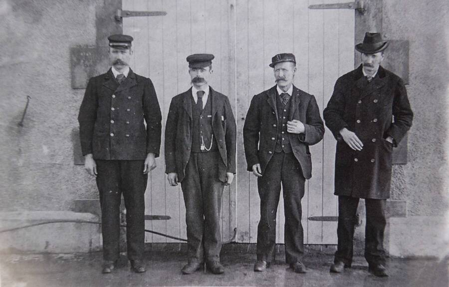

THE FLANNAN ISLES LIGHTHOUSE MYSTERY
On December 15, 1900, a passing steamer noted that the light was out at the newly built Flannan Isles Lighthouse, located on Eilean Mòr, a remote and uninhabited island off the western coast of Scotland. Due to severe weather, the relief ship Hesperus was unable to reach the island until December 26. When relief keeper Joseph Moore finally rowed ashore, he was met with a chilling silence. The island was abandoned. The three seasoned keepers—James Ducat, Thomas Marshall, and Donald MacArthur—had vanished without a trace.

The Baffling Clues: Inside the lighthouse, the scene suggested a hurried exit. The door and gate were closed, the beds were unmade, the clocks had stopped, and the lamps had been cleaned and refilled, indicating the day's work was finished. While legendary accounts mention "unfinished meals," official reports by the Northern Lighthouse Board actually found the kitchen tidy and pots cleaned. Crucially, two sets of outdoor "oilskin" weather gear were missing, but one set (belonging to MacArthur) remained hanging by the door. This suggests one man rushed out into a storm in his indoor clothes—a serious violation of protocol—perhaps to aid the others.
The Rogue Wave Theory: While folk theories suggest everything from sea monsters to giant birds, the official investigation by Superintendent Robert Muirhead pointed to a tragic accident at the island's western landing. Evidence showed massive storm damage: iron railings were bent, a supply box 110 feet above sea level was smashed, and turf was ripped up. The consensus is that two men were likely swept away while trying to secure equipment during a localized gale. The third man, witnessing the disaster, likely ran out to help and was overtaken by a subsequent massive "rogue" wave.
Fact vs. Fiction: Much of the mystery's "spookiness" comes from a 1912 poem by Wilfrid Wilson Gibson, which invented the details about the uneaten meal and strange, "crying" logbook entries. In reality, the official log was perfectly routine until it stopped on the morning of December 15.
Key Facts
Date: December 15, 1900 (Disappearance) | December 26, 1900 (Discovered)
Location: Eilean Mòr, Flannan Isles, Scotland
Casualties: 3 keepers lost at sea; inspired decades of literature and film, including the 2018 movie The Vanishing.
Cause: Officially unsolved, but historically attributed to a "dreadful accident" where the men were swept off the cliffs by an exceptionally large wave.
Redundancy and communication are vital. Shortly after this incident, the development of wireless telegraphy and stricter check-in protocols began to close the "silence gap" that allowed this mystery to remain undiscovered for 11 days.